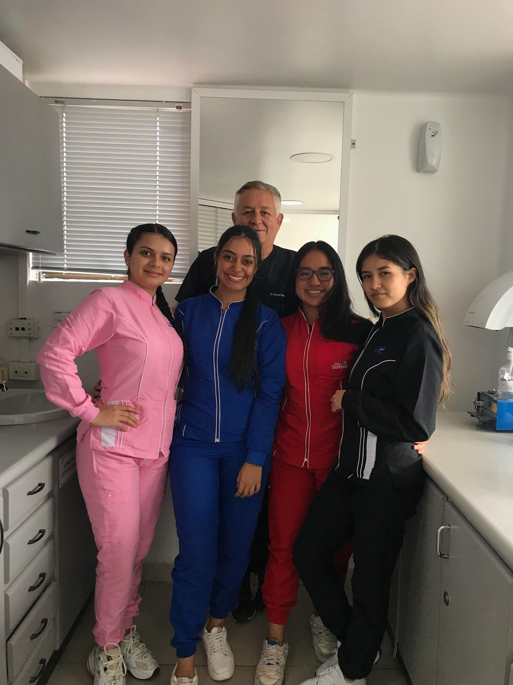

Nuestro equipo

Director · Especialista en Ortodoncia
Dr. Mauricio Velásquez Morales
Pontificia Universidad Javeriana
Odontólogo desde 1987, especialista en Ortodoncia desde 1996. Fundador de City Sonrisas en febrero de 1991, con más de 5.000 casos de ortodoncia completados con éxito.

Apoyo clínico
Equipo de Auxiliares
Atención y seguimiento al paciente
Cuatro auxiliares dentales capacitadas que acompañan cada tratamiento. Hacen que cada visita sea cómoda, organizada y profesional.